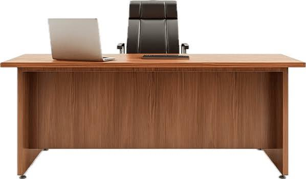

Nook & Nomad was born out of a desire to replace cluttered, mass-produced plastic organizers with tactile wood elements that promote mental clarity.
We believe that your physical workspace directly shapes your creative output. Every piece is made to cultivate tranquility.
Designed to break the mold of cheap plastic desk items. Nook & Nomad blends rich warm walnut timbers with minimal, geometric design principles. This aligns the brand with the highly lucrative, aesthetic remote work movement.
We are targeting high-intent buyers looking to curate physical calm amidst mental chaos. Every graphic element must convey tactile quality, meticulous attention to detail, and a premium eco-friendly lifestyle.
We source only FSC-certified American Walnut, ensuring each workspace artifact supports ongoing ecological growth and forestry.
Designed for multi-device setups, adapting beautifully to different configurations as digital workspaces naturally evolve.
Zero shortcuts taken. We pair state-of-the-art precise milling with traditional hand-finishing techniques for perfect tactile feedback.
Our studio blends computational design with raw wood craftsmanship. Instead of focusing on speedy mass production, Nook & Nomad prioritizes slow, ethical batches. Each unique block of walnut timber is hand-selected, inspected, and seasoned to ensure your piece stands the test of time, maturing gracefully alongside your work.
Radical Simplicity: Removing unnecessary bulk or complex fasteners to keep focus strictly on pure timber lines and dynamic utility.
Sensory Materiality: Employing genuine solid grains and acoustic felt to introduce rich tactile feedback directly into our work routines.
Lifelong Durability: Treating products with premium, non-toxic oils so that natural wood develops a highly coveted, deep patina with age.
This is really a good desk for my office.
I really appreaciate nook & nomad for creating this good stuff
Amazing desk, it's very suitable for my room